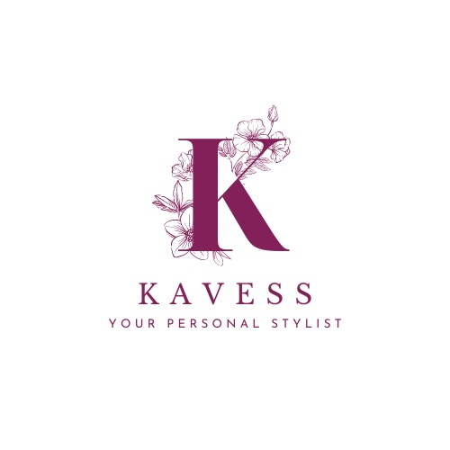
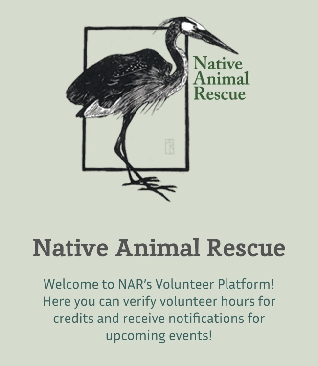

Launched my CS journey in AP CS Principles and as a member of Girls Who Code.
2022 – 2025
University of California, Santa Cruz
Graduated in three years with a Bachelor's in Computer Science, focusing on Python, AI, Machine Learning, and Creative Computing.
Experience
2025 – Present
Self-Directed Training - ERP & SuiteScript
Developing a strong foundation in ERP architecture and NetSuite customization.
Engaging with Oracle's CSADP track through mentorship and interviews with consultants.
Translating complex workflows into optimized processes across finance, ops, and data.
Feb 2025 – Jul 2025
Software Developer @ Here For You
Implemented AI voice features for a mental health organization.
Jul 2025 – Aug 2025
Development Instructor (Roblox/Lua, HTML/CSS)
Taught Lua scripting and game dev at SiliconValley4U’s program.
Covered variables, conditionals, and event-driven logic.
Guided students through building interactive games from scratch.
September 2023 - June 2025
Bayanihan at UC Santa Cruz
Active member of a cappella group Isang Himig.
Served as Isang Imig Intern where I helped with MuseScore - a software for creating sheet music.
Spent the last year as Alto Section Leader where I helped prepare alto members learn music they intend on performing.
July 2024 - February 2025
Co-Founder and Developer @ Kavess
Co-developed an AI-powered fashion chatbot that used user input and contextual cues to generate outfit recommendations.
Built early ML prototypes using TensorFlow and Python; experimented with style prediction models and adjusted system logic based on user testing.
October 2024 - December 2024
Student Volunteer with SCEE
Taught an entrepreneurship workshop to elementary school students.
November 2023 - June 2024
Mobile Application Developer
Worked on a mobile app for the organization Native Animal Rescue, which enhances volunteer management by providing a platform for volunteers to efficiently log and track their hours of dedicated service.
2021 - 2022
Tutor and Assistant
Instructed elementary students in mastering fundamental mathematical concepts and principles.
Assessed and graded students' performance on elementary math assignments, ensuring their academic progress and proficiency in the subject matter.
2021
AI Leadership Fellow
Collaborated closely with AI computer scientists, facilitating effective communication and exchange of ideas.
Conducted outreach campaigns through email correspondence to engage and inform the community about diverse AI conferences and events.
Projects

Kavess
A personal stylist chatbot and e-commerce integration built for fashion customers.

Native Animal Rescue
A volunteer management app for a nonprofit wildlife organization.